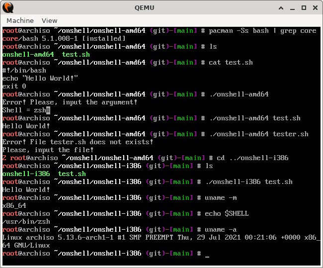

Если вы пользуетесь скриптами или создаёте их сами, то наверняка в самом начале любого из них встречали конструкцию в виде вызова интерактивной оболочки.
#!/bin/bash
В данном случае BASH, но вы можете указать любую другую, если она есть у вас в системе.
На вкус, как говорится, и цвет.
Однако, вы не можете быть уверены в том, что ваш скрипт заработает на любой другой системе Linux. Таким образом не гарантируется, что на различных системах исполняемый файл будет лежать по пути, который указан в shebang.
В этом случае при запуске вашего скрипта вы просто получить ошибку и скрипт не запустится.
env позволяет запустить команды на основе данных из переменной среды PATH.
Чтобы этого добиться, рекомендуется использовать немного другую конструкцию.
#!/usr/bin/env python3
или
#!/usr/bin/env bash
Однако этот способ носит ограниченный характер. В том смысле, что вам всё равно необходимо указывать конкретный shell.
Чтобы добиться в упомянутом смысле хоть какой-то автоматизации я же пошел немного другим путем, практически отказавшись от shebang. Написал небольшое приложение на GoLang и собрал в исполняемый файл, объем которого составляет чуть меньше 2МБ. Никакие дополнительные библиотеки для работы последнего не требуются.
git clone https://github.com/maximalisimus/onshell.git
Данный репозиторий, также, содержит и Release-версию, откуда можно скачать уже готовый исполняемый файл под вашу архитектуру, или скомпилировать самому. Инструкции прилагаются.
В качестве примера взят один из дистрибутивов Archlinux в режиме Live-CD — скриншот виртуальной машины QEMU.

archlinux-2021.08.01-x86_64.iso
Ну а на сегодня на это всё. Надеюсь я вас, хоть немного заинтересовал.
Подписывайтесь на группу в Контакте, ставьте лайки, комментируйте.
С вами, как всегда, был Shadow.
Всем Добра и Удачи!